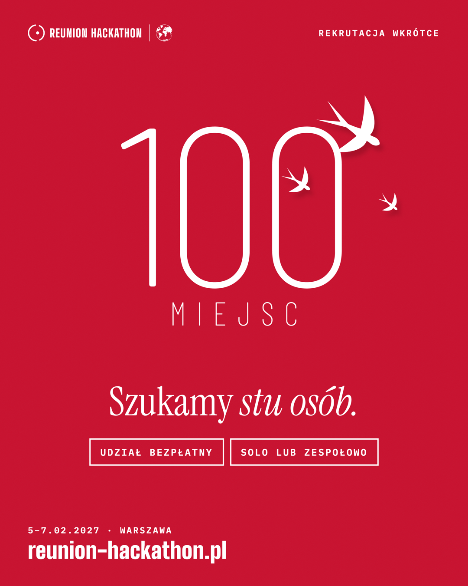
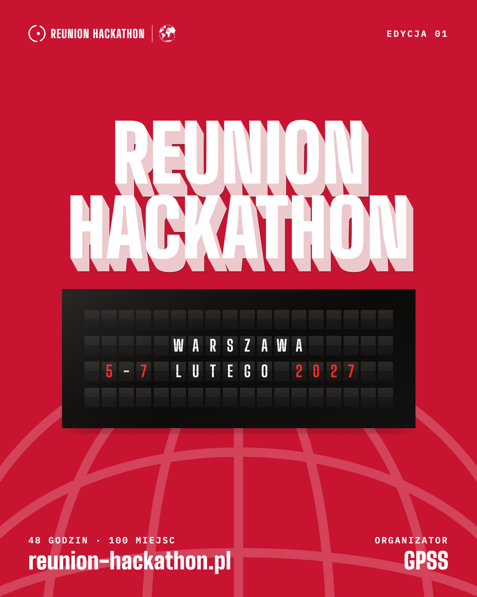
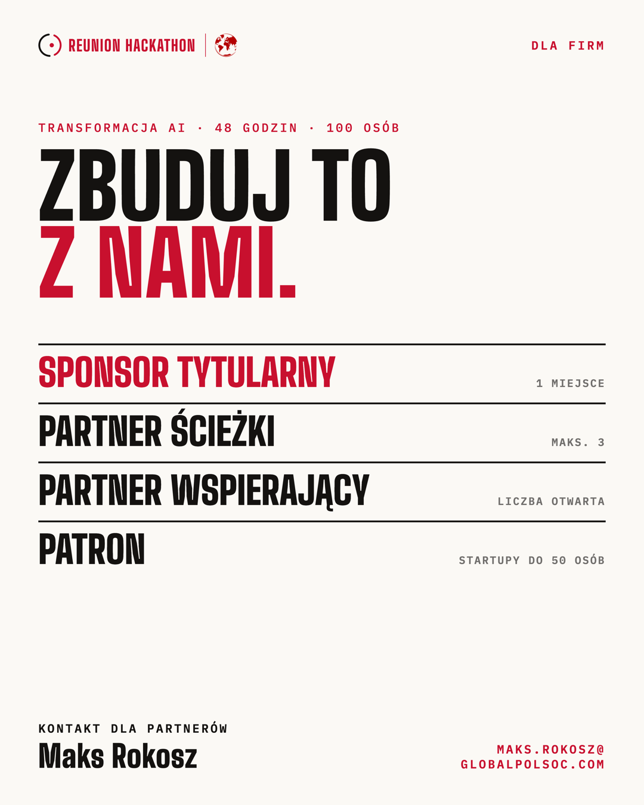
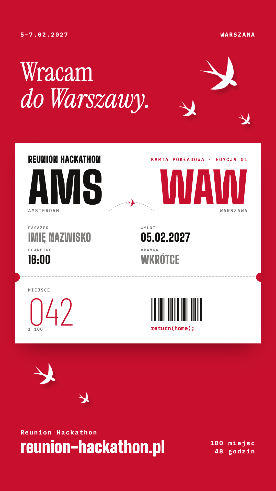
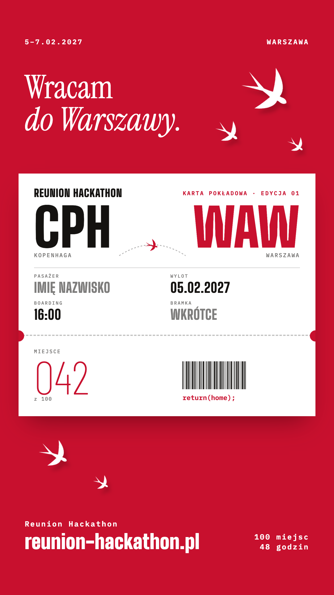
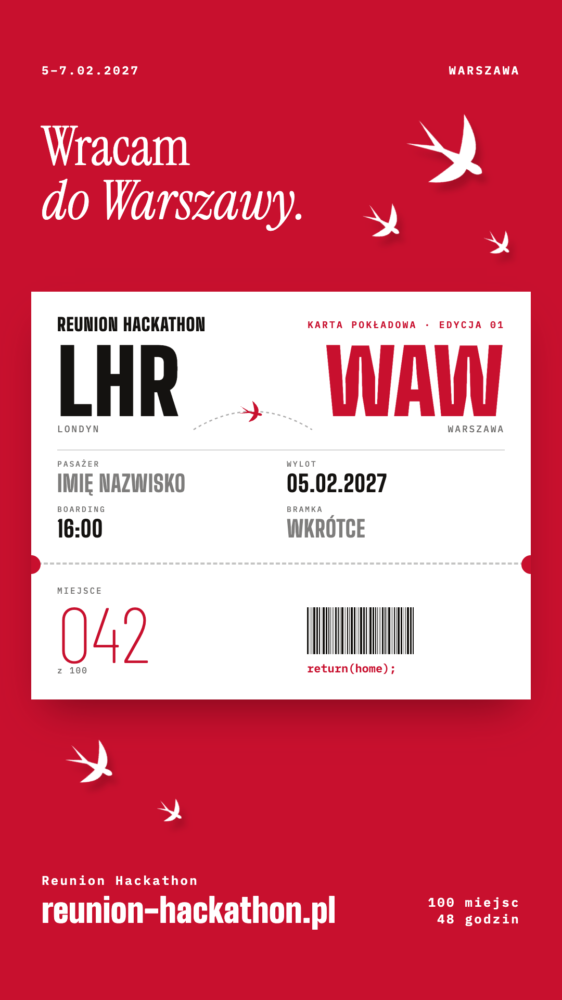
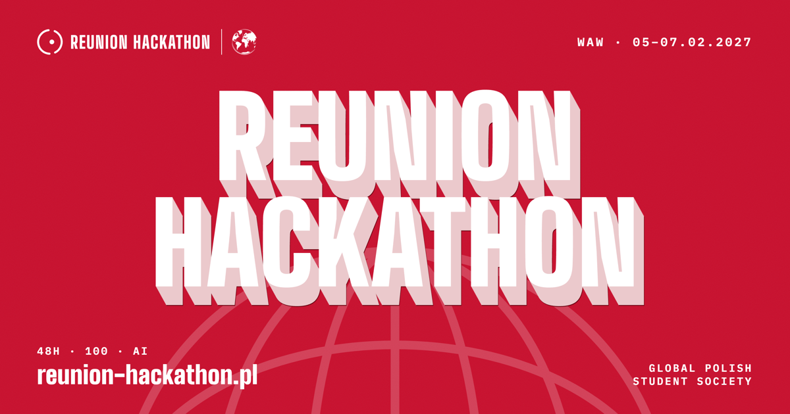
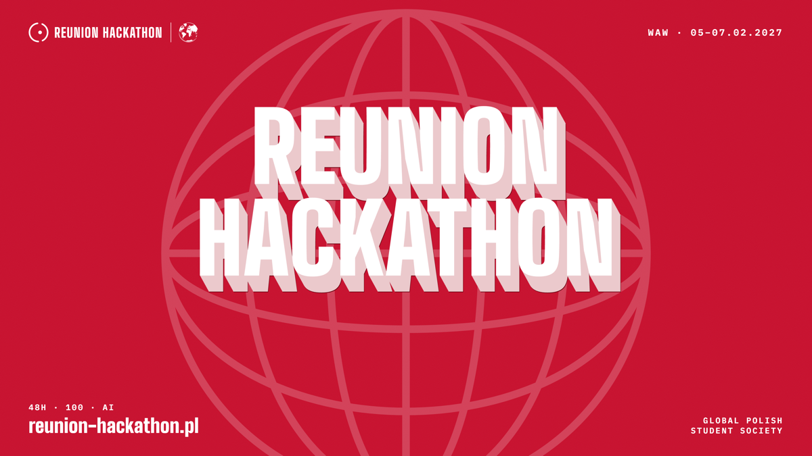
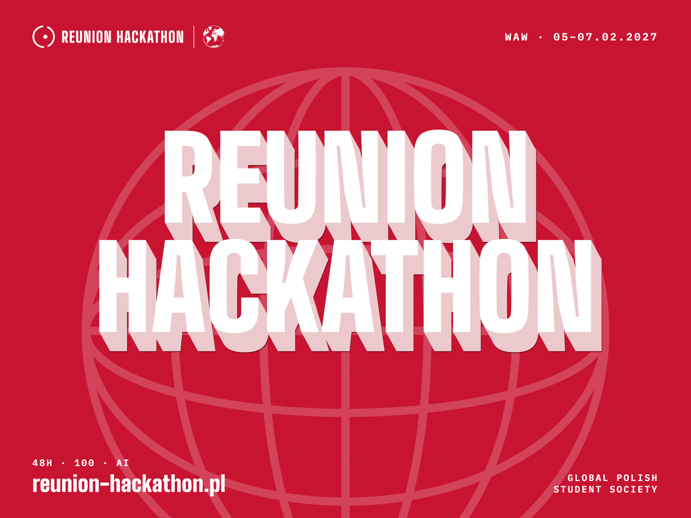
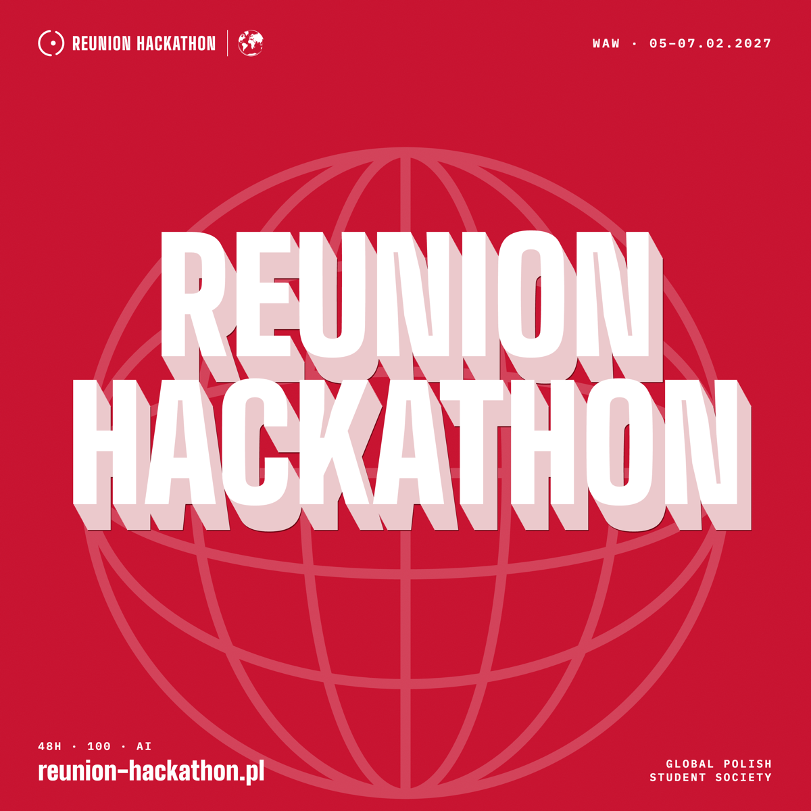

Rekrutacja · „Szukamy stu osób”
Ogłoszenie · REUNION HACKATHON
Dla firm · „Zbuduj to z nami.”
Jedna karta, trzy miasta.



Stories · AMS, CPH, LHR · po jednym na miasto uczelni

1200 × 630 · og:image strony
Facebook, LinkedIn, WhatsApp



16:9 · 4:3 · 1:1
obrazy w danych Event (JSON-LD) dla Google
Profil na LinkedIn · zdjęcie profilowe wchodzi na lewy kadr
Okładka wydarzenia: Facebook i LinkedIn.
Hasło „48 godzin pracy nad wyzwaniami firm i instytucji.”, organizator u dołu po prawej.
Post 1080 × 1350 · pole 64 / 56 px
Stories 1080 × 1920 · pole 80 / 120 / 140
PL
Reunion Hackathon. 48 godzin pracy nad wyzwaniami firm i instytucji. 100 miejsc, udział bezpłatny. Warszawa, 5–7 lutego 2027. Rekrutacja wkrótce.
reunion-hackathon.pl
EN
Reunion Hackathon. 48 hours of work on challenges from companies and institutions. 100 places, free to attend. Warsaw, 5–7 February 2027. Applications open soon.
reunion-hackathon.pl
Nie piszemy
Nagród, których nikt nie ogłosił.
Miejsca, którego jeszcze nie znamy.
Daty rekrutacji bez daty.
Jeśli czegoś jeszcze nie wiemy, piszemy: wkrótce.